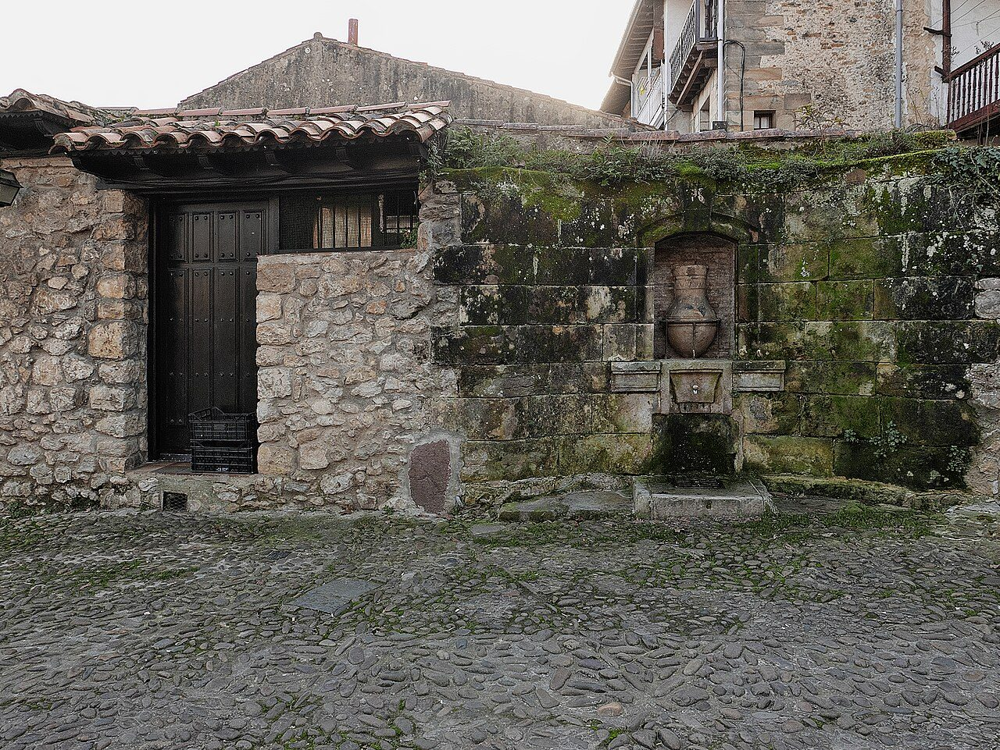

Santillana del Mar y su patrimonio
Criterios: PC 3.2, PC 7.1
🤔 Pienso5 min
Qué hago aquí: Piensa un momento y contesta con lo que ya sabes. No pasa nada si no lo sabes: es para empezar.
Dicen que Santillana del Mar es «la villa de las tres mentiras». ¿Sabes por qué?
📖 Leo y aprendo15 min
Qué hago aquí: Lee despacio, mira los dibujos y los ejemplos, y quédate con la idea clave del final.
Santillana del Mar nació alrededor del monasterio de Santa Juliana (su nombre viene de Sancta Iuliana). Con el tiempo se convirtió en una villa de nobles, con casonas, torres y palacios de piedra y escudos en las fachadas. Hoy es uno de los conjuntos medievales mejor conservados de España.

Foto: Jl FilpoC · CC BY 4.0 · Fuente, Calle del Río (Santillana del Mar).jpg
✏️ Hago25 min
Qué hago aquí: Haz las actividades en orden. Empieza siempre por las básicas.
Explica cómo nació Santillana del Mar y cómo cambió de villa monástica a villa de nobles. ¿Qué edificios corresponden a cada etapa?
Explica qué es un conjunto histórico y en qué se diferencia de un monumento aislado. Nombra tres conjuntos históricos de Cantabria.
Explica las «tres mentiras» de Santillana y desmiente cada una con datos.
Explica tres normas que deben cumplir los vecinos de un conjunto histórico y por qué existen.
Santillana recibe más de un millón de visitantes para unos 4000 habitantes. Calcula cuántos visitantes hay por vecino al año y explica dos efectos positivos y dos negativos para la vida diaria del pueblo.
Un vecino quiere poner ventanas de aluminio y un cartel luminoso en su casa del casco antiguo. Explica por qué no le dejan y propón una alternativa que respete el conjunto.
La frase de Sartre sobre Santillana no aparece en sus escritos. Explica cómo comprobarías si una cita es auténtica y por qué se repiten citas falsas.
🚀 Amplío (si quieres saber más)
Qué hago aquí: ¿Has terminado? Lee la curiosidad o elige el reto. Es voluntario.
Compara Santillana del Mar con otro conjunto histórico de Cantabria (Bárcena Mayor, Carmona, Potes o la Puebla Vieja de Laredo): origen, edificios, actividad económica y problemas actuales. Termina con una propuesta para que no se conviertan en «decorado» sin vecinos.
✅ Compruebo5 min
Qué hago aquí: Contesta sin mirar la ficha y marca cómo lo llevas.